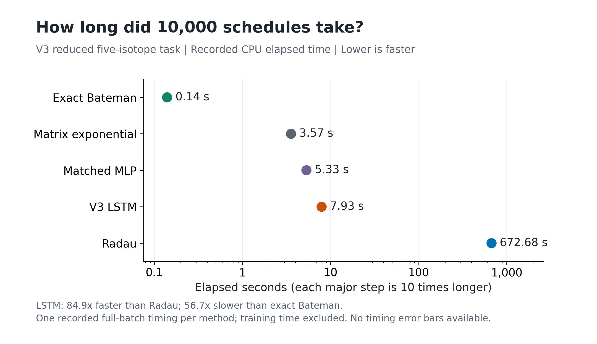
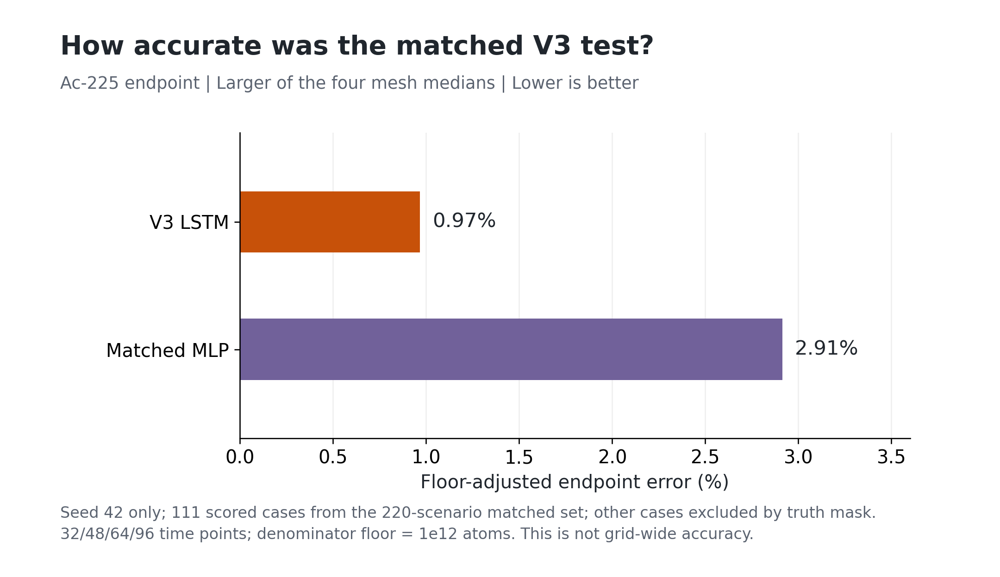
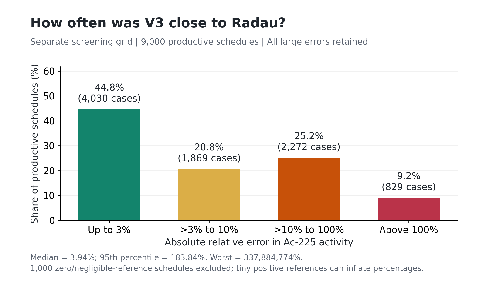
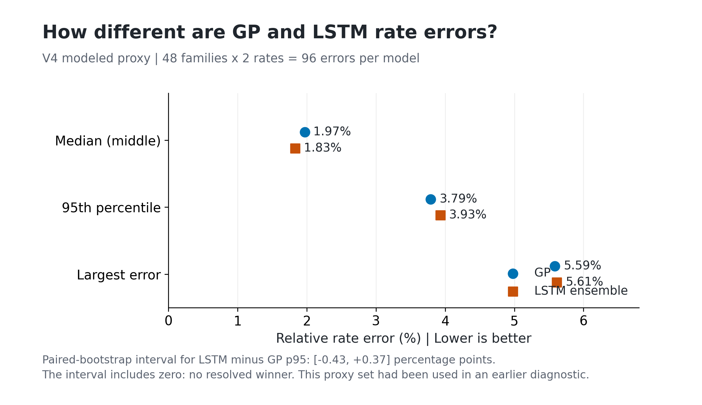
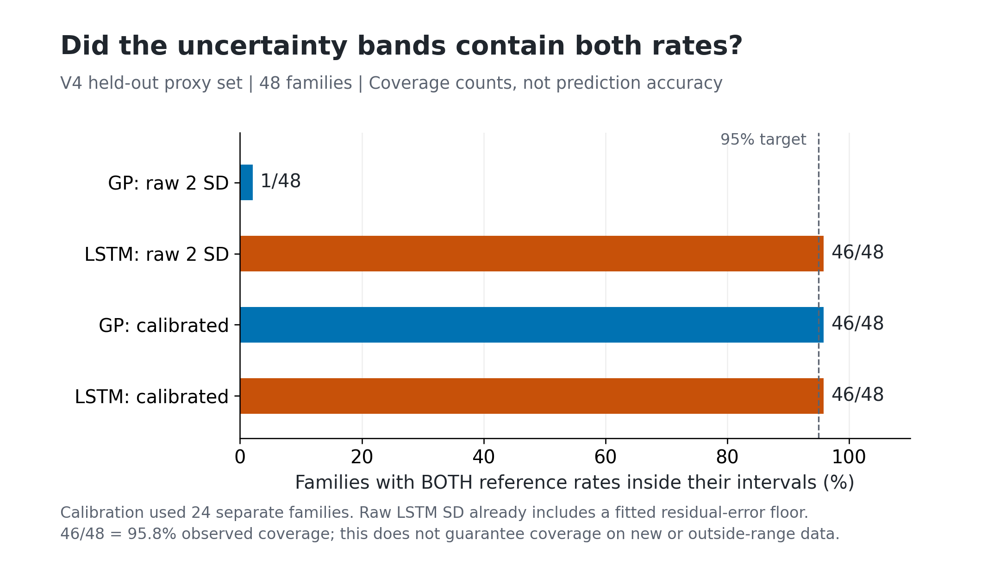
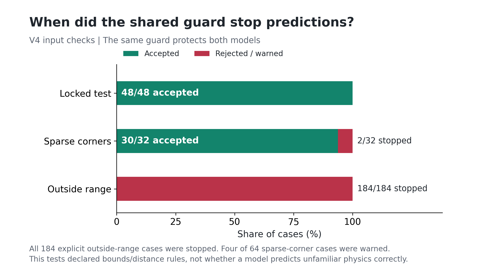
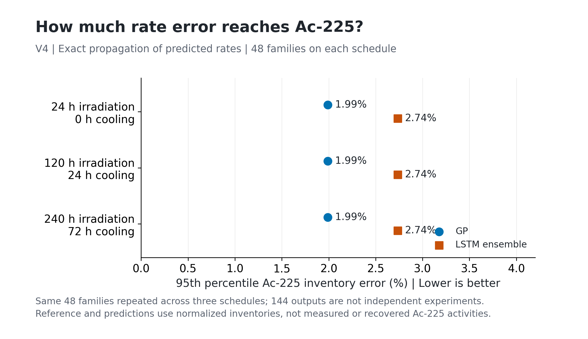

Failure-Aware Physics-Informed Surrogates for Screening Modeled Radium-226 to Actinium-225 Production Kinetics
A high-school computational-physics inquiry into stiff transmutation equations, training failures, nuclear-data mistakes, and honest claim boundaries — written so a teacher who is not a nuclear engineer can follow every choice.
1. Introduction: the human problem and the computer problemRow 1 · Context
1.1. Targeted alpha therapy, said simply
Some metastatic cancers are poorly controlled by chemotherapy or by beta-emitting radiopharmaceuticals. Beta particles are electrons; they travel millimeters in tissue and often deposit energy more diffusely. Alpha particles are helium-4 nuclei. They travel only tens of micrometers — a few cell diameters — and ionize very densely. If an alpha-emitting isotope can be chemically attached to a molecule that seeks a tumor marker, the intended idea is to damage targeted cells while sparing more distant tissue (Kratochwil et al., 2016; Morgenstern et al., 2020). This project did not treat patients, measure tumor dose, or evaluate clinical safety. The medical literature is the motivation for caring about supply, not a result of the computer experiments below.
Actinium-225 (Ac-225) is one isotope discussed for that role. Its half-life is about 9.92 days: long enough, in principle, to separate, label, and ship a product, and short enough that leftover activity does not persist for years. It feeds a cascade of alpha decays toward stable bismuth-209. Those radiobiology facts are taken from the nuclear-medicine literature. They are not outputs of the neural networks in this repository.
1.2. Why there is a production problem
Much of today’s Ac-225 still comes from “milking” aged thorium-229 stocks, themselves leftovers of historical uranium-233 programs. Published supply figures on the order of two curies per year are often contrasted with demand estimates of tens of thousands of patient doses (Engle and colleagues’ reviews of production technology). Those numbers justify why national laboratories study extra routes. They do not mean that a high-school model closed the shortage.
One extra route irradiates radium-226 with neutrons. Fast neutrons can induce the reaction 226Ra(n,2n)225Ra: the nucleus absorbs one neutron and emits two, so the mass number drops by one while the element remains radium. Radium-225 then beta-decays (a neutron becomes a proton) into actinium-225. A competing reaction, (n,γ) capture, raises the mass number and opens a path through radium-227 (42.2 minutes) into actinium-227, which lives 21.772 years. The reduced model in this paper tracks exactly those five species. It does not track heat, target melting, chemical recovery, or a hospital’s quality-control assay.
1.3. What “stiff” means, and what it does not mean
If $N(t)$ is a vector of five inventories, the reduced physics is a linear system $\mathrm{d}\mathbf{N}/\mathrm{d}t = \mathbf{A}\mathbf{N}$ when reaction rates are treated as constant over an interval. Each row is sources minus sinks. For Ac-225, the only source in this reduced chain is decay of Ra-225, and the only sink is Ac-225’s own decay:
The same pattern writes the other four rows (Equation set 2 in Section 4). Because Ra-227 decays in 42.2 minutes while Ra-226 lives about 1,600 years, the decay constants differ by a factor of order $2\times 10^{7}$. Numerical analysts call that stiffness: the equations contain a fast clock and a slow clock at once. A naive time-stepper must take tiny steps to stay stable, which is expensive. A stiff implicit integrator such as Radau can take more reasonable steps and still be accurate for the equations it is given (Hairer & Wanner, 1996).
Stiffness is not a speed trophy. This paper does not convert $2\times 10^{7}$ into “20 million times faster computing” or into an untimed “40-hour cluster sweep.” Where speed is reported, it is a measured batch comparison on a declared task (Section 5).
1.4. Research question
After a 137-source scoping audit of isotope-production and scientific-machine-learning literature (Research Findings, 2026), the defensible question is not “Did I invent PINNs?” and not “Did I make cancer treatment cheaper?” It is:
To what extent can a frozen, failure-aware physics-informed surrogate screen modeled Ra-226 → Ac-225 production conditions — reporting calibrated uncertainty, rejecting unfamiliar inputs, and verifying finalists with trusted physics — when judged against reduced ODE self-consistency, matched baselines, and an attempted external reconstruction?
2. Literature: what is established, and where a gap still existsRow 1 · Gap
Bateman-type chain equations and stiff ODE integrators are classical (Bateman, 1910; Hairer & Wanner, 1996). Production of Ac-225 from Ra-226 has been discussed in reactor studies (Sasaki et al., 2023, on the Joyo fast reactor) and in accelerator-neutron experiments (Morrell, 2020, Berkeley deuteron-on-beryllium irradiations of milligram radium nitrate). Evaluated nuclear data for Ra-226 (n,2n) live in JENDL-5 and ENDF/B-VIII.0; the only experimental (n,2n) point in EXFOR for this reaction is O’Connor and Perkin (1960), 1.60 ± 0.20 b at 14.5 MeV (EXFOR 21405). Thermal (n,γ) is not tabulated below 1 keV in those libraries; Bagheri et al. (2015), EXFOR 31760, give 13.8 ± 0.3 b as a modern activation anchor.
Physics-informed neural networks (PINNs) embed differential equations in a training loss (Raissi, Perdikaris, & Karniadakis, 2019). Fourier feature mappings reduce spectral bias on high-frequency or threshold-like inputs (Tancik et al., 2020; Rahaman et al., 2019). Hard enforcement of initial conditions follows Lagaris, Likas, and Fotiadis (1998). Weak-form / integral PINN losses for stiff dynamics include Nasiri and Dargazany (2022). Jacobian row-normalization addresses scale imbalance across residual components (Bento and coworkers, 2022). None of those ingredients is new.
Neural and Gaussian-process surrogates for nuclide depletion also already exist, as do physics-constrained recurrent models in other nuclear settings. The 2026 scoping audit of 137 screened records (from a 2,281-record discovery pool) did not identify the same combination of: a pathway-specific Ra-226(n,2n) schedule screen; physics-informed recurrence; calibrated domain rejection; trusted-solver verification of finalists; and a planned Berkeley transfer. That is a research-gap statement of the form “not identified in this search,” not a proof of worldwide priority. The audit itself is title/abstract plus selected full-text reading, not 137 complete peer reviews.
Established engineering codes already accept time-dependent flux histories (ORIGEN, OpenMC depletion). Handling time dependence is therefore not novelty by itself. The intended contribution, if any, is a decision workflow with failure maps — not a new class of artificial intelligence.
3. Inquiry process: what went wrong, in orderRows 2–3 · Method as inquiry
AP Research asks not only for a polished method, but for how the method was found. The following timeline is the actual path. Dates follow the project log (ISEF_Planning/project_history.md) and technical notes cited in Section 7.
3.1. V1 — a vanilla network and the wall of stiffness (Spring 2026)
The first model was an ordinary multilayer perceptron: inputs were time, neutron flux, and a scalar energy feature; outputs were five inventories. It failed. The network averaged through the 42.2-minute Ra-227 spike, ignored trace Ac-225 beside bulk Ra-226, and predicted negative inventories — “alchemy,” in the lab notes. There was no structural reason for daughter ingrowth to follow parents. That failure is why later versions add physics to the loss and, eventually, to the architecture.
3.2. V2 — physics-informed MLP, then an expert stress test (May–June 2026)
V2 added PINN residuals for the Bateman right-hand side, Fourier encoding of energy (to see the 6.42 MeV threshold), adaptive activations, and Jacobian row-norm balancing so Ac-225 was not drowned in the loss. Monte Carlo dropout was used for uncertainty. On a recorded held-out protocol the median Ac-225 error versus Radau was about 4.5%, with a six-of-six internal physics gate on the checkpoint named in that record. A Streamlit dashboard made the model inspectable.
The project notes describe a 20 June 2026 review with Jaden Palmer, a Ph.D. researcher at North Carolina State University. The recorded concerns included uncertainty calibration, stiff differential residuals, a time-series baseline, and independent benchmarks. Dropout was abandoned in this implementation; that choice does not establish that Monte Carlo dropout is generally invalid for physics. The early V3 design used a trapezoidal integrated residual, and the final August protocol used an exact-interval Bateman residual.
A separate architectural diagnosis (May 2026) showed that treating daughters as free integrals of a signed neural rate never encodes parent-to-daughter logic. Symptom patches (softplus ingrowth blends, safety-ratio early stopping) improved plots without fixing the forward-model class. Semi-analytic Bateman backbones and later the hard-initial-condition ansatz addressed that class error (docs/PINN_ARCHITECTURE_FIX.md).
Artifact integrity remains a live constraint: the v2 validation JSON and the weights file later loaded by the demo have not always shared the same SHA-256 checksum (docs/CURRENT_STATUS.md). This paper therefore treats historical 4.5% / 6-of-6 figures as results for a named recorded artifact, not as a blank check on whatever file happens to sit in weights/ today.
3.3. V3 — PI-LSTM, then the checkpoint crisis (late June–July 2026)
V3 lives in v3_pilstm/. The network is a two-layer LSTM (hidden size 256) over 64 log-spaced times, with Fourier bands on energy and later on time, a softplus output for nonnegativity, and a Lagaris-style hard initial condition
so time zero cannot create mass. Physics is enforced by a trapezoidal integral residual (Nasiri & Dargazany, 2022) rather than autodiff $\mathrm{d}N/\mathrm{d}t$. Training used Google Colab GPUs (T4 class) for multi-thousand-epoch runs.
On 3 July 2026 a downloaded results zip reported roughly 1.75% test Ac-225 error. Loading the bundled weights locally and running the held-out comparison script produced endpoint errors near 74%. Three failures stacked. First, the zip’s JSON described a 256/8 hard-IC model, but the .pth file was a legacy 128/4 bare state_dict. Second, validation scenarios had overlapped training seeds, so validation numbers were optimistically low. Third, checkpoint selection and the comparison harness sometimes scored different objects (last time step versus full trajectories; different random held-out sets). The lesson is professional, not cosmetic: a number in a JSON file is not a result until architecture, split, metric, and weights are the same experiment. Run C required disjoint seeds (validation 2025, test 2024), config saved inside every checkpoint, and an endpoint metric aligned with the poster headline.
3.4. Endpoint collapse and a stiffness curriculum that trained the wrong physics (July 2026)
Even after physics-code fixes, some retrains improved full-trajectory losses while the checkpoint score — median relative error of Ac-225 at the final time — locked near 1.0. If the prediction at harvest is approximately zero, relative error against a positive truth is approximately 100%. A Smooth-L1 average over 64 times can underweight that endpoint, and causal physics weights emphasize early intervals. An unsuccessful stiffness curriculum also changed the training dynamics while evaluation retained full-stiffness dynamics; endpoint errors became extremely large in those runs (New folder/docs/ENDPOINT_COLLAPSE_HISTORY_20260731.md). This was a failure of this training setup, not evidence that all stiffness curricula are invalid.
3.5. The nuclear data were wrong in a specific, documented way (18 July 2026)
Training ODEs originally used a smooth sigmoid for σ(n,2n) that saturated near 27 millibarns. Evaluated JENDL-5 / ENDF/B-VIII.0 tables give 755.7 mb at 14 MeV — about 28 times larger at that energy — and a peak of 2.53 b at 10 MeV. The old 12.8 b thermal capture value had been mislabeled as ENDF; the libraries tabulate zero below 1 keV, and the best experimental thermal point used later is Bagheri 13.8 ± 0.3 b. Half-lives were updated from live NuDat 3 retrievals. These sources were versioned: ODE_DATA_VERSION=v1 remains the bit-stable default for old checkpoints; v2 is the evaluated layer (docs/DATA_PROVENANCE.md).
Running literature anchors with v2 made a “Joyo-like” monoenergetic overprediction worse (hundreds to thousands times, versus tens of times under v1). That is a finding: the remaining gap is how the neutron spectrum is represented, not only “the sigmoid was a bit low.”
3.6. The literature does not contain the time series we wanted (July 2026)
A hunt for public multi-point fast-reactor 226Ra(n,2n) trajectories found none suitable for training. Joyo experimental campaigns were described as planned after 2026. A 17-row benchmark table was built instead, with honest tiers: few neutron-comparable Ac-225 rows, many structurally non-comparable accelerator or decay-only points. Default ODE endpoints at slogan “Joyo” conditions sat about 10–25× above published 15–30 GBq simulation yields. Both V2 and the PI-LSTM track the same ODE, so both fail together. A later scale-fit to an effective σ ≈ 1.44 mb can force agreement; that diagnoses a spectrum-average mismatch. It is not independent experimental validation, and it is not “1.00× exact concordance with JAEA.”
3.7. Berkeley: a 600-times miss, kept on purpose (August 2026)
Morrell's Berkeley experiments used targets containing 1 mg of Ra-226 in radium nitrate salt; 1 mg is the radium mass, not the total salt mass. Neutrons came from 33 and 40 MeV deuterons on thick beryllium. Recovered Ac-225 activities were approximately 1.40 and 0.77 microcuries. Ac-227 was not observed; without a numerical detection limit this does not specify a quantitative upper bound or establish zero contamination. Produced activity and activity recovered after separation are different quantities. The first frozen V3 reconstruction disagreed by about 623 times and 600 times and lay outside V3 support. Missing fluence, geometry corrections, beam history, uncertainty, and reference-time information limit interpretation of this reconstruction. It is a preserved stress test, not a completed external-validation experiment.
3.8. Dr. Engle’s fence (27 August 2026)
Dr. Jonathan W. Engle, University of Wisconsin–Madison Cyclotron Research Group, advised that a production surrogate should confine itself to reaction-initiation rates ($\sigma\cdot\phi$) and decay kinetics given user-specified composition and incident flux. Target thermodynamics and wet radiochemistry cannot be universalized without proprietary facility geometry. He pointed to IAEA Isotopia as the international planning tool to compare against, not to casually claim to replace.
4. Frozen methods (what produced the tables in Section 5)Rows 2–3 · Alignment
4.1. Reduced Bateman system
Let $\mathbf{N}=[N_{226},N_{225},N_{\mathrm{Ac225}},N_{227},N_{\mathrm{Ac227}}]^\top$. With interval-constant rates $k_{n,2n}=\phi\,\sigma_{(n,2n)}$ and $k_{n,\gamma}=\phi\,\sigma_{(n,\gamma)}$,
Reference trajectories for V3 were generated with scipy’s Radau method. For constant-rate intervals the same linear chain also has an exact matrix-exponential propagator; that exact baseline is what later showed V3 is slower than a five-nuclide analytic batch. The reduced chain omits transport, most side reactions, daughters beyond these five, chemistry, and heat.
4.2. V3 PI-LSTM protocol
- Backbone: 2-layer LSTM, hidden size 256; 1,400 Radau training trajectories, with 64-point source meshes and ordered training submeshes down to 24 points.
- Inputs: eight energy Fourier bands, no time Fourier bands, spectrum features, and interval duration. Evaluation uses 32/48/64/96 time points.
- Constraints: softplus nonnegativity without a positive output floor; species-specific hard initial conditions (Equation 2); exact-interval Bateman physics residual (
expmix); robust endpoint and atom-budget penalties. - Controls: parameter-matched MLP; exact reduced-chain propagator; Radau as numerical teacher.
- Training: 6,000 epochs, batch 64, seed 42; FP32 network and FP64 analytic physics, TF32 off. Selection uses seed 2025; matched and shifted tests use seeds 20260804 and 20260725.
- Headline V3 accuracy: frozen seed 42 on the declared matched modeled endpoint protocol.
The saved final summary records physics_loss_mode = expmix. The trapezoidal residual belongs to earlier experiments; it is not the loss used by the final V3 results below. Neither stiffness curriculum nor QSSA is active in that final protocol. Source: New folder/v3_pilstm/results/final_v3_20260811_seed42/lstm_summary.json.
4.3. V4 rate-surrogate protocol
V4 asks a different question: can two finite-geometry / TENDL proxy reaction rates — refined $k_{n,2n}$ and $k_{n,\gamma}$ — be interpolated safely from seven inputs (five source/geometry features plus two baseline rates)? A Gaussian process is the natural small-data baseline. A five-seed LSTM ensemble (seeds 42, 314, 1618, 2026, 2718) is the neural alternative. Sequence length is one, so V4 cannot prove that LSTM memory helps. Splits were 160 train / 24 selection / 24 calibration / 48 locked test families. The 48 were locked for V4 but had appeared in an earlier V2 geometry diagnostic; they are not a virgin external test. Uncertainty intervals were calibrated on the 24 calibration families. A shared guard rejected inputs outside physical bounds or far from training. Rate predictions were then pushed through the exact five-nuclide equations on three declared schedules (24 h; 120 h + 24 h cool; 240 h + 72 h cool) to test whether rate error stayed tolerable as Ac-225 inventory.
4.4. What was not done
No patient data. No proprietary hot-cell CAD. No claim that OpenMC or SCALE was timed against V3/V4. No retraining on the Berkeley 600× miss. No single “FDA percentage” as a universal Ac-227 specification; published impurity discussions are product- and time-specific (literature audit Q3).
5. ResultsRow 4 · Evidence
5.1. V3 on the reduced modeled task
| Quantity | Value | What it is | What it is not |
|---|---|---|---|
| Matched Ac-225 endpoint: maximum of four mesh medians | 0.97% | Seed 42; 111 scored cases of 220; denominator floor 1012 atoms | Experimental error or an unfloored percentage on every scenario |
| Shifted maximum of mesh medians, corrected descriptive replay | 1.56% | 28 scored cases of 60; 95% bootstrap interval 0.69–7.60%; gate inconclusive | A statistically established under-3% guarantee |
| Parameter-matched MLP | 2.91% | Control on the same matched comparison | Proof that every MLP is worse |
| 10,000-schedule screen | 18/20 top Radau recovered; selected plan = Radau rank 2 (0.047% below best) | Ranking utility after exact verification | A real reactor campaign |
| Speed vs Radau (that batch) | 84.9× faster | Repeated reduced ODE emulation | Supercomputer or OpenMC speed |
| Speed vs exact reduced chain | 56.7× slower | ML is not needed for this tiny linear system | A reason to discard ML when rates come from expensive transport |
| Separate screening-grid Ac-225 activity error | Median 3.94%; p95 183.84% | 9,000 productive schedules; 1,000 zero/negligible-reference cases excluded | Uniform under-3% performance |
| Screening constraint errors | 110 false feasible; 114 false infeasible | Against the declared modeled screening rule; finalists need solver checks | A clinical safety decision |



5.2. V4 frozen GP versus five-seed LSTM
| Locked modeled-proxy metric (96 rate errors across 48 families) | GP | LSTM ensemble |
|---|---|---|
| Median rate error | 1.97% | 1.83% |
| p95 rate error | 3.79% | 3.93% |
| Calibrated 95% joint coverage | 95.8% | 95.8% |
| Raw ±2 SD joint coverage | 2.1% (1/48) | 95.8% (46/48); includes fitted residual-error floor |
| Explicit out-of-range rejection | 184 of 184 rejected; 0 of 48 in-domain false rejects | |
| Ac-225 inventory p95 after exact propagation | 2.04% | 3.03% |
| Paired bootstrap on p95 difference | LSTM − GP: −0.43 to +0.37 percentage points; crosses zero | |




Both models passed every predeclared gate. The scientific winner is none. Gaussian process is only the provisional leader because its observed p95 is slightly lower. The code records claim_eligible = false because the reference is a finite-geometry/TENDL development proxy, not experiment (docs/V4_CURRENT_STATUS_20260828.md).
5.3. External attempts, stated as attempts
Joyo simulation endpoints and Berkeley experimental activities require different source, geometry, and timing assumptions. The roughly 600-fold Berkeley disagreement belongs to an incomplete, outside-domain reconstruction. It does not isolate neural-network error from missing physical inputs, and it does not establish experimental accuracy.
6. Discussion, limitations, and implicationsRow 5 · Limits
The strongest honest reading is that a high-school-built, failure-aware screening stack can emulate a reduced stiff chain well enough to rank modeled schedules and can interpolate two proxy rates with calibrated intervals and a working rejection rule — while remaining slower than the exact five-nuclide solution and unproven on a clean experiment.
Limitations are structural, not decorative. (1) Five nuclides omit most of a real depletion network. (2) V3 labels are solver-generated. (3) V4’s 48-case lock is not untouched external data. (4) V4 sequence length is one. (5) v1 cross sections still underlie old checkpoints. (6) No timed comparison versus OpenMC/SCALE exists. (7) Ac-227 “safety” is not a single percentage. (8) Chemistry recovery, heat, and facility CAD are out of scope by Engle’s fence. (9) One V3 seed is not a seed study. (10) Berkeley inputs required for a fair test are still incomplete.
If a sufficiently specified, independently checked Berkeley reconstruction still disagrees, it can support a scoped non-transfer finding. With missing fluence or geometry, the preserved disagreement remains a reconstruction stress test, and the missing inputs remain a limitation.
The next required steps are already written in the V4 status note: reconstruct 33 and 40 MeV cases with units and times checked; run one frozen comparison without tuning; obtain expert review of chain, reconstruction, and wording; freeze the poster to those tables.
7. Conclusion
This inquiry began with a medical supply motivation and a failed vanilla network. It proceeded through a PINN, an NCSU critique, an LSTM rebuild, a results-zip that did not match its weights, a loss that hid zero Ac-225 at harvest, a 27 mb sigmoid that was not JENDL, a Joyo gap that is a spectrum problem, a 600-fold Berkeley miss, and a cyclotron-lab fence around chemistry and heat. The frozen modeled evidence supports a screening-layer claim with calibrated uncertainty and domain refusal. It does not support national-laboratory experimental concordance, supercomputer replacement, or clinical scale-up. That narrower claim is the one this paper asks a teacher — and later a judge — to hold me to.
Resources actually usedRow 6 · Conventions
This section is an audit inventory. The student still needs to confirm bibliographic details, correspondence, and which sources they have personally read.
People who changed the method
- Jaden Palmer, Ph.D. researcher, North Carolina State University — technical discussions recorded in project notes. Confirm meeting dates and any formal fair role from the original correspondence and signed paperwork.
- Dr. Jonathan W. Engle, Associate Professor and Director, Cyclotron Research Group, University of Wisconsin–Madison — 27 August 2026 guidance on scope (kinetics in, chemistry/heat out) and IAEA Isotopia as benchmark.
Codes and computing
- Python scientific stack: NumPy, SciPy (Radau), PyTorch (LSTM/PINN training), scikit-learn / GP implementations used in V4.
- Project modules:
ra226_ac225_transmutation.py,v3_pilstm/models/pi_lstm.py,v3_pilstm/physics/integrated_loss.py,v3_pilstm/train_pi_lstm.py. - Remote training: Google Colab A100 runs for final V3 and the V4 LSTM ensemble; historical T4/Kaggle experiments are separate. V4 GP fitting and the recorded V3 speed benchmark used CPUs.
- Dashboards: Streamlit
app.py(v2) andv3_pilstm/app_v3.py.
Nuclear data and experiments
- JENDL-5 and ENDF/B-VIII.0 Ra-226 (n,2n) and (n,γ) tables via IAEA-NDS mirrors; parsed into
data/evaluated/. - EXFOR 21405 (O’Connor & Perkin 1960 (n,2n) at 14.5 MeV); EXFOR 31760 (Bagheri 2015 thermal capture).
- NNDC NuDat 3 / ENSDF half-lives (live fetch 18 July 2026).
- TENDL-based finite-geometry proxy used as V4 development reference (not experimental ground truth).
- Morrell (2020) Berkeley dissertation and associated 33/40 MeV irradiations.
- Literature yield table:
data/literature_benchmarks.csv(Hogle HFIR, Kuznetsov SM, Sasaki Joyo, Morgenstern cyclotron, and others, tier-labeled). - IAEA Isotopia web tool (Engle recommendation):
https://www-nds.iaea.org/relnsd/isotopia/isotopia.html.
Project documents a teacher can open
ISEF_Planning/project_history.md— dated research log.docs/V4_CURRENT_STATUS_20260828.md— frozen V4 claim.docs/DATA_PROVENANCE.mdanddocs/DATA_ASSUMPTIONS.md— every nuclear number’s source.docs/ENDPOINT_COLLAPSE_HISTORY_20260731.md,docs/PINN_ARCHITECTURE_FIX.md,docs/CURRENT_STATUS.md.research/literature_audit_2026/RESEARCH_FINDINGS.md— 137-source scoping audit.- Figure explanation notes and source hashes — the seven regenerated figures.
IsotopePINN_30Day_Professional_Mastery.html— 30-day self-study from atoms to defense.IsotopePINN_ISEF_Masterclass_Deck.html— spoken-judge version after the 30-day course.
ReferencesRow 6
- Bagheri, R., et al. (2015). Thermal-neutron capture measurements relevant to 226Ra. EXFOR 31760; also Radiochimica Acta production-calculation context.
- Bateman, H. (1910). The solution of a system of differential equations occurring in the theory of radioactive transformations. Proc. Cambridge Philos. Soc., 15, 423–427.
- Bento, J., et al. (2022). Jacobian row-normalization for stiff physics-informed networks (as used in this project’s residual balancing). See project implementation notes in
docs/PINN_ARCHITECTURE_FIX.md. - Engle, J. W., and production-review coauthors. Reviews of Ac-225 supply technologies and the recommendation, in this project’s 27 August 2026 correspondence, to benchmark against IAEA Isotopia and to exclude universal chemistry/heat without facility CAD.
- Hairer, E., & Wanner, G. (1996). Solving Ordinary Differential Equations II: Stiff and Differential-Algebraic Problems. Springer.
- Hogle, S., et al. (2016). HFIR-related Ac-227 / radium irradiation measurements (OSTI 1253240), used as a tiered literature anchor, not as an (n,2n) training series.
- IAEA Nuclear Data Section. EXFOR database; JENDL-5 and ENDF/B-VIII.0 libraries; Isotopia production tool.
- Kratochwil, C., et al. (2016). 225Ac-PSMA-617 for targeted alpha therapy of metastatic castration-resistant prostate cancer. Journal of Nuclear Medicine, 57(12), 1941–1944.
- Lagaris, I. E., Likas, A., & Fotiadis, D. I. (1998). Artificial neural networks for solving ordinary and partial differential equations. IEEE Transactions on Neural Networks, 9(5), 987–1000.
- Morgenstern, A., et al. (2020). Targeted alpha therapy with actinium-225 and bismuth-213. Review literature used only as clinical motivation.
- Morrell, J. T. (2020). Dissertation, University of California, Berkeley / associated 88-Inch Cyclotron neutron-production experiments on Ra-226.
https://nucleardata.berkeley.edu/doc/morrell.pdf. - Nasiri, P., & Dargazany, R. (2022). Reduced-PINN: An Integration-Based Physics-Informed Neural Networks for Stiff ODEs. arXiv:2208.12045.
- National Nuclear Data Center. NuDat 3 decay data. Brookhaven National Laboratory.
https://www.nndc.bnl.gov/nudat3/. - O’Connor, D., & Perkin, J. L. (1960). 226Ra(n,2n) at 14.5 MeV. EXFOR 21405. (Often cited in this repository as O’Connor & Preiss in secondary notes; the EXFOR entry is the citable measurement.)
- OpenMC documentation. Depletion user’s guide.
https://docs.openmc.org/. - Palmer, J. (20 June 2026). Technical review meeting, NC State ARTISANS Lab. Unpublished expert critique recorded in the project history log.
- Rahaman, N., et al. (2019). On the spectral bias of neural networks. ICML.
- Raissi, M., Perdikaris, P., & Karniadakis, G. E. (2019). Physics-informed neural networks. Journal of Computational Physics, 378, 686–707.
- Sasaki, Y., et al. (2023). Feasibility studies on Ac-225 production using the Joyo experimental fast reactor. Journal of Nuclear Science and Technology (and related JAEA planning papers). Used as simulation-context anchors, not as a 1.00× match.
- SCALE/ORIGEN methods manuals, Oak Ridge National Laboratory. Established depletion context.
- Tancik, M., et al. (2020). Fourier features let networks learn high-frequency functions. NeurIPS.
- Ogunnubi, S. (2026). Project artifacts: literature audit findings; V4 status; data provenance; endpoint-collapse note; PI-LSTM source. Paths listed in the Resources section.